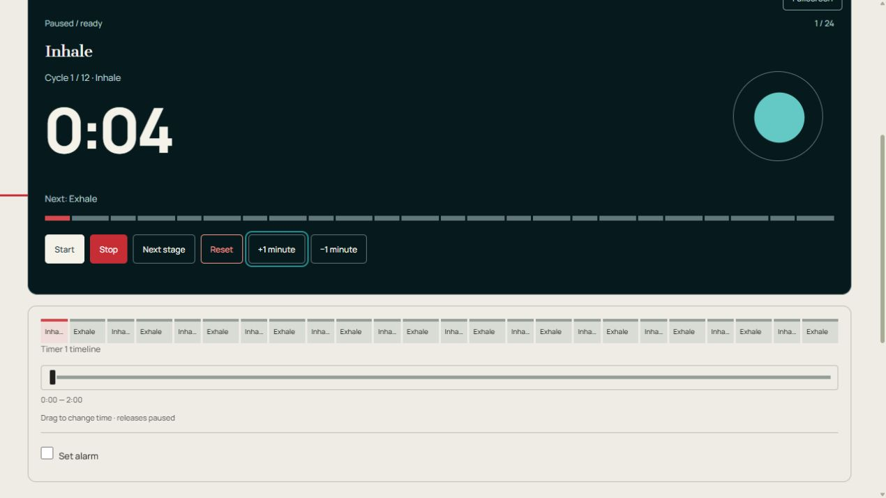

Minuteur de respiration
Suivez un rythme respiratoire modifiable avec un visuel en expansion et en contraction douce.
Gardez cette page ouverte. La restauration des horloges est interrompue après un rechargement. Les signaux de scène nécessitent l'activation du son.
Fonctionnement et conseils
Fonctionnement : Minuteur de respiration
Suivez un rythme respiratoire modifiable avec un visuel en expansion et en contraction douce.
Commencez et suivez les noms de phases et le cercle. Modifiez les longueurs de phase, supprimez les phases indésirables ou modifiez le nombre de cycles.
Configurer et exécuter la minuterie
- Ouvrez Personnaliser → Modifier pour revoir la base, les horloges et les emplacements. Nommez les cartes de vos personnes, plats, échantillons ou travaux.
- Appuyez sur un numéro de durée pour le cadran circulaire. Tournez dans le sens des aiguilles d'une montre pour ajouter du temps ou dans le sens inverse des aiguilles d'une montre pour soustraire, puis appliquez. Vous pouvez également saisir un numéro. Fermer supprime le brouillon du cadran.
- Modifier ce chronomètre et cet enregistrement de tour modifie une carte en pause. La minuterie d'édition modifie la configuration partagée et reconstruit la carte lorsque vous appliquez les modifications ; exportez d’abord les lectures.
- Commencez individuellement ou démarrez tous ensemble. L'étape suivante termine un créneau plus tôt. En mode manuel, l'horloge attend à zéro ; choisissez Étape suivante, puis Démarrer.
- Faites glisser la chronologie sous une horloge pour corriger le temps écoulé. La libération laisse cette horloge en pause. Vérifiez la position, puis reprenez.
Aperçu des commandes

- Démarrage/Pause — Exécutez ou détenez cette carte uniquement.
- Arrêter — Pause sans effacer le temps écoulé.
- Étape suivante — Terminez l'emplacement actuel plus tôt et passez au suivant.
- Réinitialiser — Terminez le parcours de cette carte et revenez à son premier emplacement.
- Démarrer / Pause / Reprendre
- Exécute ou met en pause cette carte uniquement. Le temps de pause est exclu.
- Arrêter
- Met cette horloge en pause sans effacer le temps écoulé.
- Étape suivante
- Termine cet emplacement plus tôt. L'emplacement suivant s'exécute si la carte était en cours d'exécution, ou reste en pause si elle était en pause.
- Réinitialiser
- Restaure le premier emplacement de cette carte et efface son temps et ses tours écoulés. Les autres cartes restent inchangées.
- +1 minute / −1 minute
- Modifie la durée de cet emplacement de 60 secondes ; le modèle stocké est inchangé.
- Tout démarrer / Tout mettre en pause
- Démarre les cartes éligibles ensemble ou tient le tableau. En mode tour de rôle, seul le premier joueur commence. Ceux-ci se trouvent sous Personnaliser sur les pages à horloge unique.
- Ajouter une horloge / Supprimer une horloge
- Ajoute une copie de la première configuration, jusqu'à 12 cartes. Supprimer l'horloge est à l'intérieur. Modifier cette horloge et ce record de tour ; arrêtez d'abord la carte.
- Exporter au format CSV
- Télécharge l'étape actuelle et les secondes écoulées pour chaque carte, ainsi que les totaux et les temps intermédiaires enregistrés. Cet instantané ne constitue pas un historique complet des étapes ni une configuration réutilisable.
- Son activé / Son désactivé
- Active/désactive les sons de scène et les rappels. Le tick de transfert et l'alarme supplémentaire ont des commutateurs séparés.
- Tableau Plein écran / Plein écran
- Agrandit une horloge sombre ou le tableau complet. Quittez avec Quitter le plein écran ou Échap lorsque cela est pris en charge.
- Chronologie
- La bande à l'intérieur de l'horloge affiche la progression. Faites glisser le curseur séparé en dessous pour corriger le temps écoulé ; la libération met cette carte en pause.
- Définir l'alarme / Alarme sur / Tester l'alarme
- Activez une cloche supplémentaire, faites glisser Alarme vers une position de temps écoulé et testez-la. Cette cloche possède son propre interrupteur, distinct des sons de scène et du tick de transition de scène. Gardez l'onglet ouvert.
- Clic de transition entre étapes
- Active ou désactive le clic de transfert court séparément des alarmes de scène.
Paramètres et configurations enregistrées
- Cycles/Appliquer le nombre de cycles
- Répète les deux premiers emplacements. Modifiez et appliquez cette paire avant de choisir l'inventaire tournant. Les réglages de mouvement réduit suppriment l’expansion ; les mots de phase restent.
- Personnaliser / Modifier / Modifier la minuterie
- Personnaliser ouvre les outils. Modifier ouvre l'éditeur complet. Mettez toutes les horloges en pause avant d'appliquer une nouvelle configuration ; Appliquer les modifications reconstruit la carte, exportez donc d'abord les lectures. Annuler ferme l'éditeur.
- Modèles / Configuration originale / Courte pratique / Créer un modèle
- Les modèles appartiennent à ce minuteur. La configuration d'origine restaure son plan de départ. Un entraînement court fournit des emplacements modifiables plus courts. Créer un modèle ouvre l'éditeur ; entrez un nom et enregistrez le modèle actuel pour conserver votre plan.
- Enregistrer comme minuterie personnalisée/Dupliquer/Enregistrer/Annuler
- Enregistrer en tant que minuterie personnalisée donne un nom à votre plan dans Mes minuteries sous le contrôle du compte. Dupliquer enregistre une copie distincte. Save valide le nom ; Annuler ferme le formulaire de dénomination.
- Nom du timer / Fondation / Horloges / joueurs / Illustration
- Choisissez des comptes à rebours séquentiels, des compteurs indépendants ou des banques de temps de joueur, avec 1 à 12 cartes. L’illustration choisit une illustration pour une minuterie personnalisée.
- Ajouter un emplacement / Monter / Descendre / Supprimer
- Créez et réorganisez la liste des emplacements. Gardez au moins un emplacement. Les secondes sont sa durée ; Instruction/quantité d'eau/point de contrôle affiche une note sur l'horloge.
- Avancé : préparation, repos, répétitions et son
- Préparez et reposez l'insertion d'emplacements supplémentaires en quelques secondes. La séquence de répétition répète le plan. L'affichage choisit vers le bas ou vers le haut dans un emplacement. Le passage à l'emplacement suivant contrôle automatiquement le transfert à zéro.
- Signaux du créneau
- Au début et à la fin choisissez un son par emplacement. L'avertissement est dans quelques secondes restantes ; Rappel toutes les secondes écoulées entre les signaux répétés. Zéro désactive un avertissement ou un rappel. Les marques de couleur de phase fonctionnent ou se reposent.
- Son activé / Volume / Son lors de l'enregistrement d'un tour / Tic-tac silencieux pendant les 10 dernières secondes / Masquer les chiffres de l'horloge
- Contrôle le son de la scène, son volume, les clics de tour en option, le tic-tac final et l'affichage numérique. La tique de transition d'étape et le réglage de l'alarme ont des commutateurs séparés.
- Étoile soulignée / Démarrer la minuterie
- La star ajoute cette page à la ligne des favoris de la page principale et des autres minuteurs. Appuyez à nouveau dessus pour le supprimer. Make start timer choisit la minuterie qui s'ouvre à partir de la page d'accueil.
- Connectez-vous avec Google/Déconnexion/Mes minuteurs/Charger les paramètres synchronisés
- Le contrôle de compte se connecte ou se déconnecte. Mes minuteries répertorient les minuteries personnalisées enregistrées. Charger les paramètres synchronisés charge les modifications de compte reçues ; mettez d'abord en pause une minuterie en cours d'exécution.
Exemple : répéter une paire d'inspiration et d'expiration
L'exemple utilise Inspirez 4 secondes et Expirez 6, répétées 12 fois : deux minutes. Modifiez et appliquez la première paire, puis définissez Cycles sous Personnaliser et appliquer le nombre de cycles. Le cercle s'étend à l'Inspiration et se contracte à l'Expir. Utilisez un rythme confortable.
Autres façons de l'utiliser
- Mots de phase avec les chiffres masqués
- Un rythme et un comptage de cycles différents
Limites de sauvegarde, de son et de navigateur
Le rythme est illustratif. Choisissez un rythme confortable ; la minuterie ne fait aucune allégation d’effet sur la santé.
Les paramètres, les modèles nommés, les minuteries personnalisées et les favoris sont enregistrés dans ce navigateur. Connectez-vous avec Google en haut à droite pour synchroniser les configurations enregistrées. Si Charger les paramètres synchronisés apparaît, faites une pause avant de charger. La synchronisation de la configuration enregistrée ne synchronise pas les horloges en direct sur tous les appareils.
Gardez cet onglet ouvert et testez le son sur l'appareil que vous utiliserez. Les téléphones et les navigateurs peuvent retarder les alarmes dans les onglets en arrière-plan ou lorsqu'ils sont verrouillés. Recharger restaure les horloges enregistrées en pause ; la fermeture de la page ne maintient pas une alarme en direct.
Exportez les relevés avant de réinitialiser, de supprimer une carte ou d'appliquer un autre plan. CSV est un instantané ; les sauvegardes locales automatiques ne constituent pas une archive permanente des résultats.